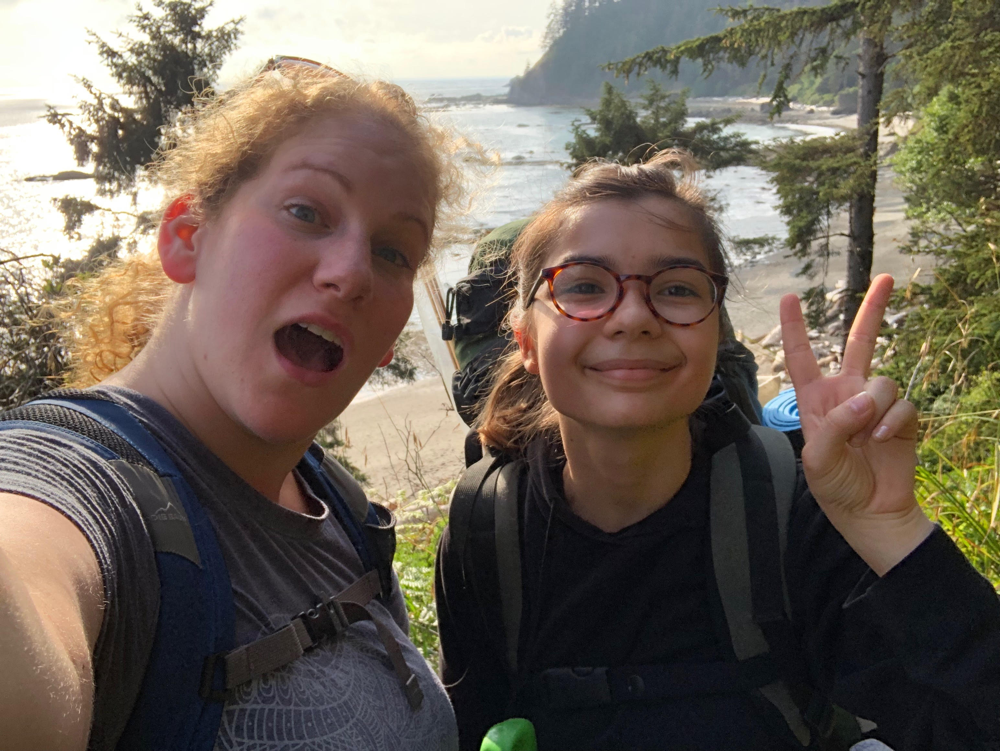
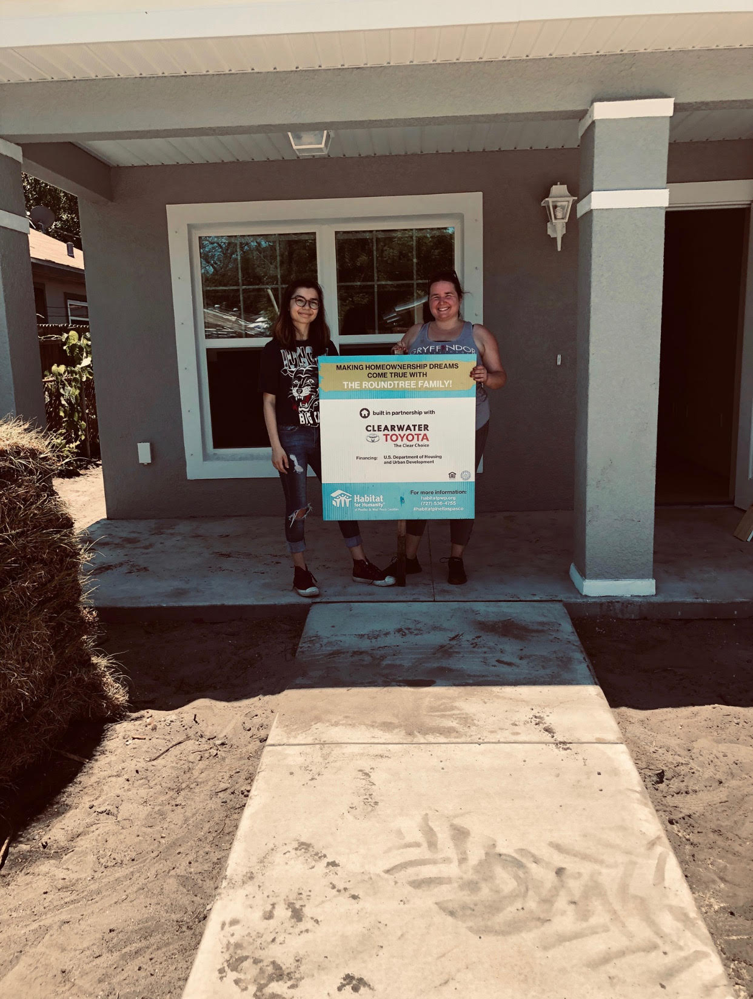
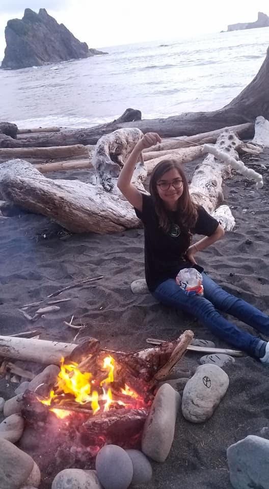
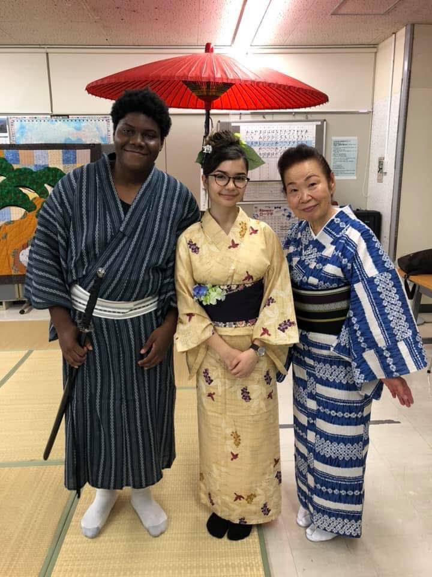

My name is Hannah Joseph, I am a 17 year old rising Junior attending Girls Who Code in Seattle at Adobe.
I’m excited to be here and I enjoy learning how to code with my teachers and peers.
I will be a Rotary Youth Exchange student in the fall, I will be going to Taiwan for a year on a cultural exchange!
I’m super excited to go, even though I’m feeling nervous because I’m not super confident in the language yet.
I’m very close to my siblings so it will be difficult to be away from them for so long.
My sister and I like to watch anime together and my brother and I watch ‘The Office’ together.
I also like to listen to music, it’s sort of a hobby? It’s just something that I like to have in the background.
I’ve got a lot of overly specific playlists for any mood you could think of.
Likes:
I like to rock climb, volunteering with Habitat for Humanity, garden, read, bike, go to farmers markets, travel, spicy food, cooking, and watching movies. I love to read, my favorite book is ‘Carry On’ by Rainbow Rowell. (The sequel comes out in September!)
  
Dislikes:
I do not like to swim and I don’t like to run. I also don’t like olives.
Fun Fact:
I recently went to Japan through the Sister Cities Clearwater Nagano exchange program as their student ambassador.
It was so much fun, it was unbelievable. I can’t wait to go back!

Favorites:
My favorite color is blue (sky blue with white clouds and sunshine by water.)
Some of my favorite movies (I have too many to just have one) is ‘Little Women’, ‘Pride and Prejudice’, ‘Kill Bill’, ‘Scott Pilgrim VS the World’, ‘What we do in the shadows’, and ‘The Big Sick’.
My favorite fruits are mango and watermelon. So good when ripe :)